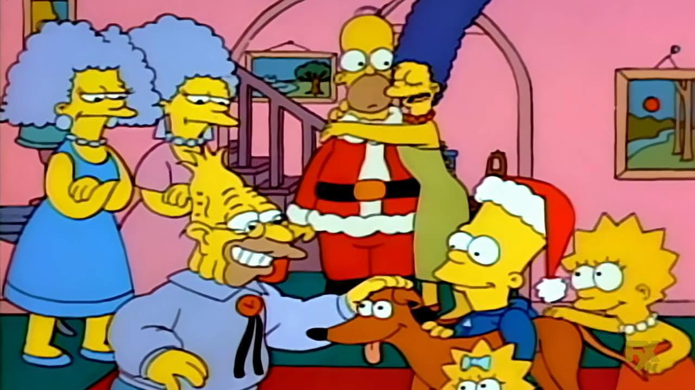

INSPECTOR DE SEGURIDAD
HOMER SIMPSON
"¡D'oh!"
Padre de la familia Simpson. Amante de las rosquillas, la cerveza Duff y ver televisión en el sofá. A pesar de sus constantes torpezas en la planta nuclear, ama profundamente a su familia.
EPISODIOS DESTACADOS

T5 E15
Homer el Grande
T8 E8
Homer vs 18ª Enmienda
T8 E23
El enemigo de Homer
T4 E12
Marge contra el monorriel
T5 E3